Chapter 2 Intro to R
Week 3 tutorial goals:
- R Basics
- Object types
- Packages
- Working directory
- Importing data
- Exploring data
2.1 RStudio
What is R? What is coding?
- Coding is a language that is fed directly into an interpreter.
- Programming languages are fed into a computing system that reads the script and executes the commands.
- Non-programming languages simply translates the programming language into its corresponding output, e.g. Hypertext Markup Language (HTML). HTML is often used to display information on webpages.
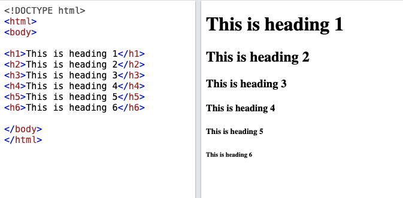
- E.g. of other programming languages: JavaScript; Python; Mac Terminal (bash); Windows Command Prompt
Ris a software for statistical computing. It is designed with particular processes that are tailored to statistical analysis and graphics. In order to initiate those processes, we write our commands in an R script for R to interpret and execute.
Integrated Development Environment (IDE) editor: RStudio
RStudio is a software that makes R more user-friendly. If you run the software R, you see only a single panel, which is not very informative.
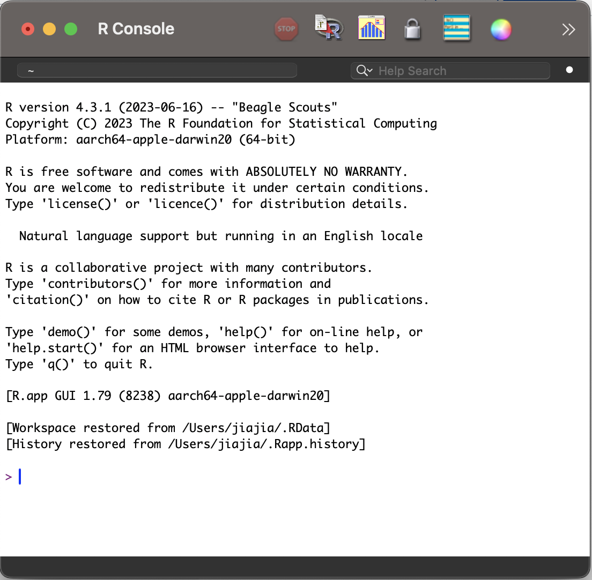
RStudio gives you more panels in addition to the R console (on the left) that displays information to support our use of R.
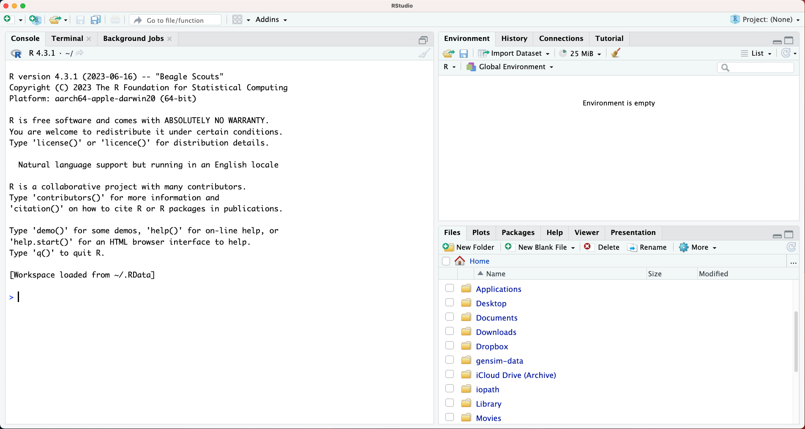
Environment
The environment lists the objects you have saved and are able to “call” (i.e. use in subsequent commands).
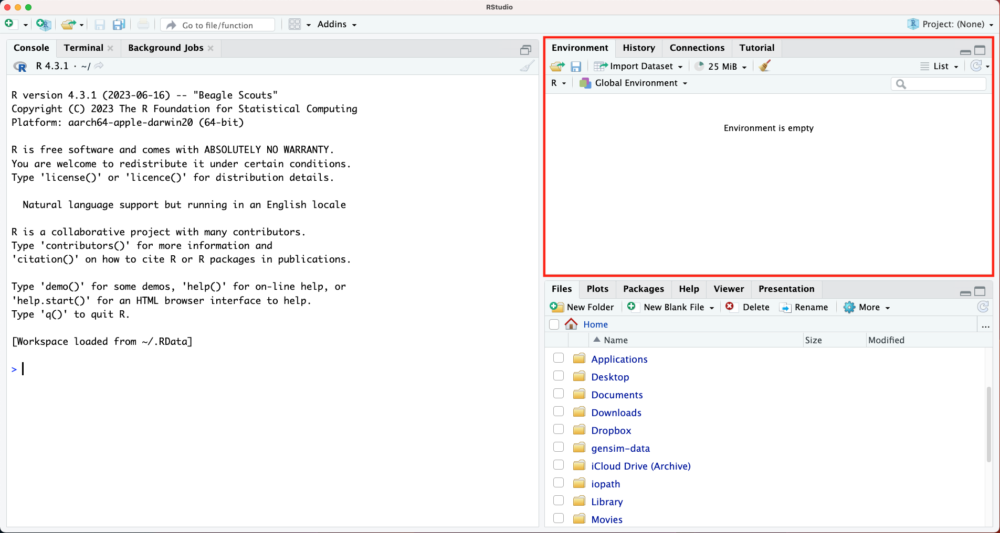
R Script
You can try to run codes in the console, but running codes linearly can be restricting, kind of like using a typewriter instead of a word document—you have to redo everything when you make a mistake.
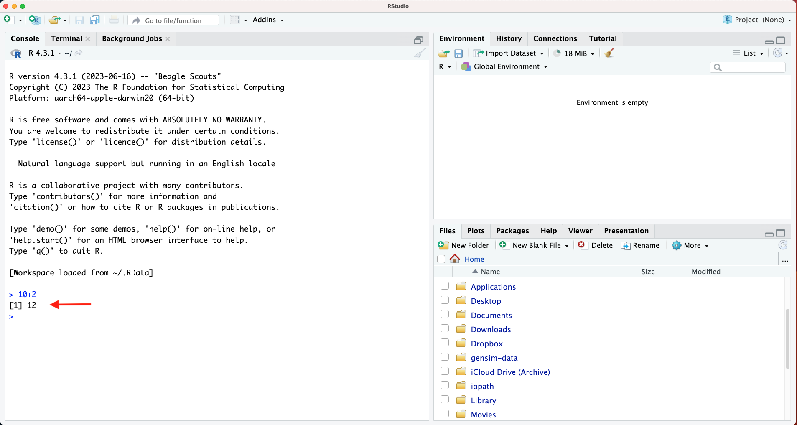
In order to create our code document, we need the R script.
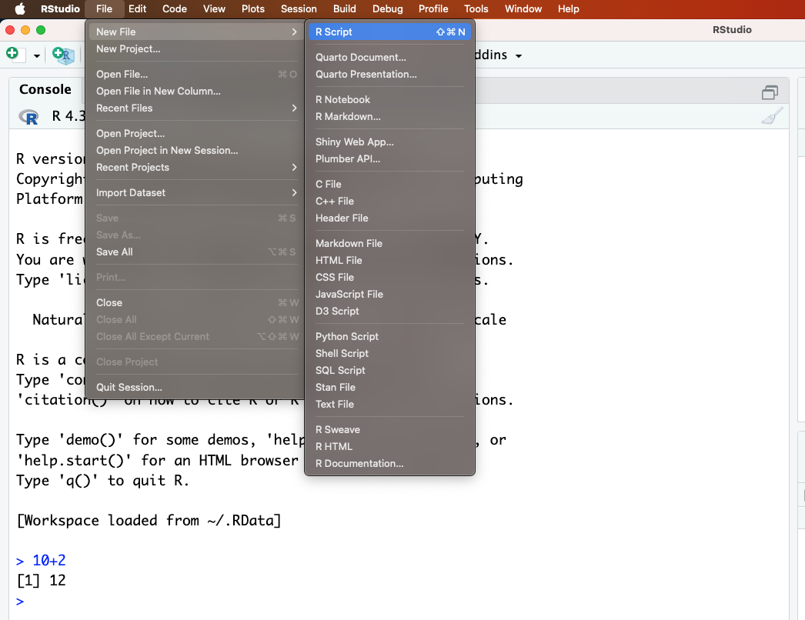
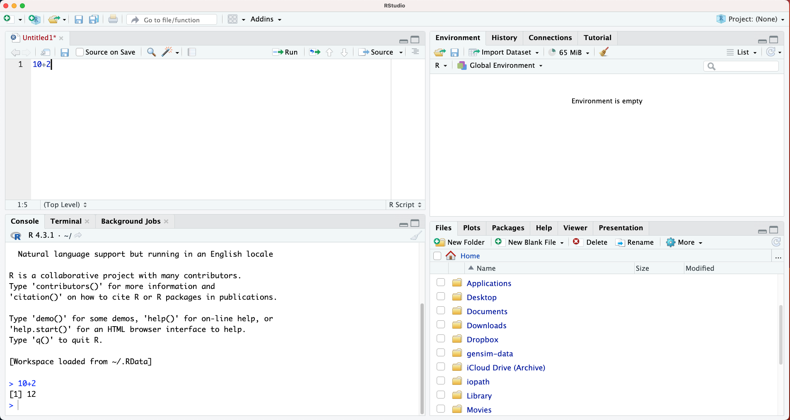
2.2 Getting started
A sophisticated calculator
R can do whatever your calculator can do, and much more.
## [1] 0## [1] 15## [1] 0.26## [1] 0.25839Objects
Objects store data. You can assign objects using <- or =. In general, we use <- for assignment. There are distinctions between the two that are not relevant to the content here.
The way to assignment object is to type <object name> <- <data>. For example,
You will see obj1 added to your environment panel. “Names of objects can only contain letters, numbers, _ (underscore), or . (period), and must begin with a letter” (An Introduction to R for Research, emphasis added).
Functions
Similar to what we did in Excel last week. Functions are what makes R useful.
Understanding a new function. Use ?<functionname> to pull up the R documentation for the function. For example, one of the basic functions we need to learn is c() which allows you to combine data. The function mean() allows you to calculate the mean value, similar to the AVERAGE function we used in Microsoft Excel last week.
We can use c() to combine elements, such as numbers. We can then run a function like mean() on the combined output.
## [1] 10 20We assign a new object and run mean() on the new object.
## [1] 15Data types
Data types tell R how the object should be read. Why do they matter? They affect what calculations can be done and how functions work. Words or labels can be specified using quotations ". These are known as characters in R. The function class() will tell you what kind of data type a variable is. Now lets create two objects, one with numbers and one with characters.
## [1] "numeric"## [1] "character"The exact same numbers can be read as numbers or characters. The numbers 1, 2, 3 could refer to the numeric type, or they could refer to the labels “1”, “2”, “3”, which are the character type.
## [1] "character"There are six basic data types: character, numeric, integer, logical, complex, raw. We will only be using numeric, character, and logical types.
Data frames
Now, we want something closer to a dataset. We can use the column bind function cbind() to join two equal-length vectors. Let’s create two variables
id <- c(1,3,2) # the first variable, let's say we have three student ids 1,2,3
score <- c(250, 450, 800) # they scored 250, 450, 800 respectivelyView the newly created object eg2 using view() function.
Note that using cbind() (column bind) function creates a matrix, which can only contain one class of data, leading to a coercion of all elements to the same class.
# coercion
eg1 <- cbind(c("1",3,2),c(250,450,800)) # note eg1 in your Environment is marked 'chr' indication whereas eg2 is marked 'num'If we want a mix of different data types in the same table, we use the data.frame() function. Each variable, however, can only take be one data type. If you input a mix of character and numeric elements, they will be coerced to character for that variable, similar to the previous example above.
eg1 <- data.frame(v1 = c("a","c","b"),
v2 = c(250,450,800)) # notice that "=" is used here for local assignment
eg2 <- data.frame(v1 = c(1,2,3),
v2 = c(250,800,450))View each data frame.
Base R vs. packages
R comes with a set of base commands that allows you to do a range of statistical tasks. For example, let’s try using plotting using base R functions and the object eg2.
## Help on topic 'plot' was found in the following packages:
##
## Package Library
## base /Library/Frameworks/R.framework/Resources/library
## graphics /Library/Frameworks/R.framework/Versions/4.4-arm64/Resources/library
##
##
## Using the first match ...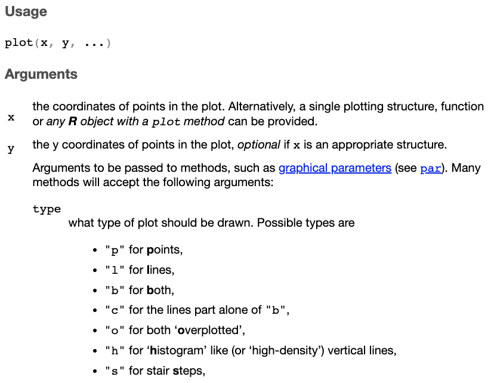
We need to specify arguments x, y, and type of plot type. To select one column from a dataframe, use $ to specify column.
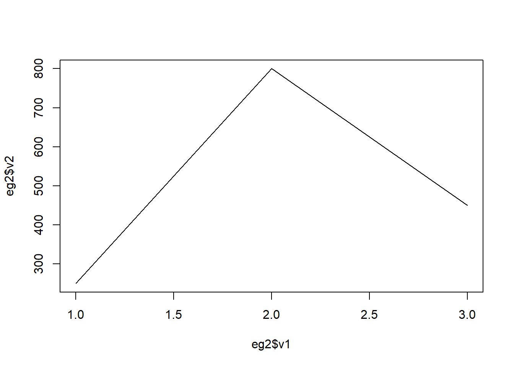
Tidyverse
R, as an open-source software, allows users to built functions using the basic functions within R. To load these additional user-built functions, we have to download and load packages. Tidyverse is a package we will be using throughout this course.
install.packages("tidyverse")
# you only need to install packages once
library(tidyverse) # you have to load the package every time you restart an R sessionTry using the ggplot function from the tidyverse package. This is complex. Don’t worry if you don’t understand what the code is doing. Just run it. We will be using the function repeatedly over the next few weeks.
# eg1
ggplot(data = eg1, aes(x = v1, y = v2)) + geom_line() # eg1 is unable to plot a line because v1 is a character type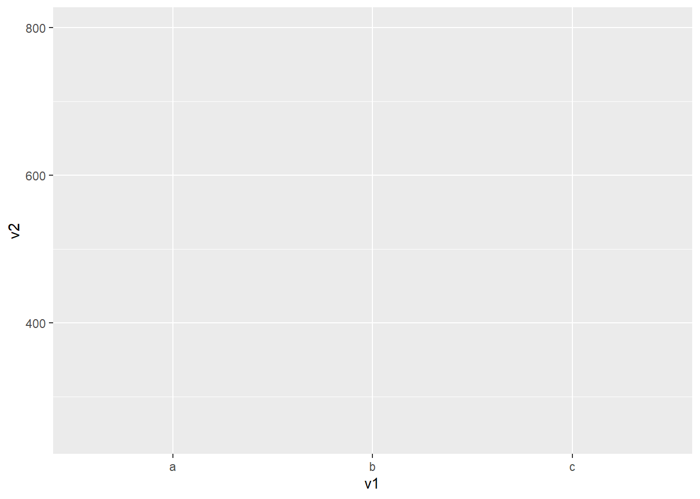
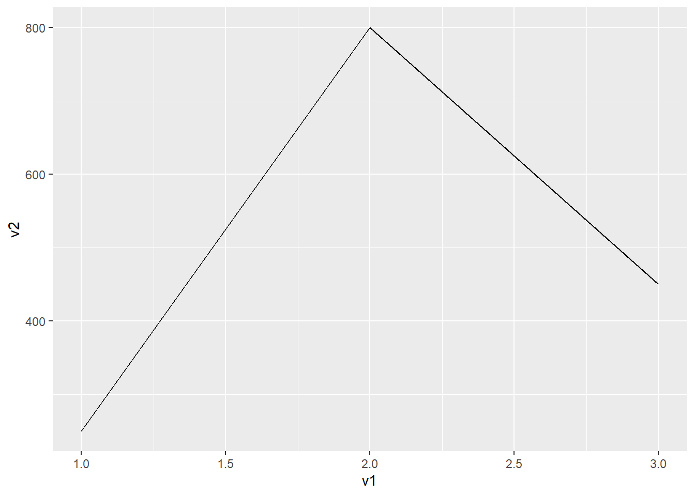
2.3 Working directory and importing data
You can find out your current working directory by using the function getwd(). Your working directory is the root folder where R begins to retrieve any information.
Opening file STAR.csv
If the file is not in the working directory, you can
- Move the file to your working directory or,
- Change your working directory (Session > Set Working Directory > Choose Directory, and select the location where your file is located) or,
- Alternatively, if the file is in a subfolder of your current working directory, you can retrieve it by stating the path.
We are going to use the function read.csv(), which takes a file path for its first argument.
# the basic way to load a csv file
?read.csv()
paste0(getwd(),"/STAR.csv") # this will give you a string for the STAR.csv file if it is in your current directoryread.csv(paste0(getwd(),"/STAR.csv")) # this will read the file if it is in your current working directoryBut that was just for illustration purposes. This can get cumbersome when dealing with multiple files.
R project to organize our workflow
File>New Project...- The location of your new project will become the default working directory. You don’t have to set your working directory every time you reopen RStudio.
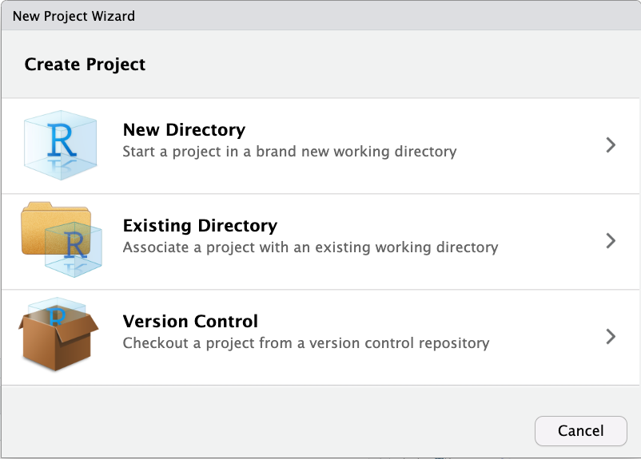
If you are not using your own laptop, save it on a portable storage, e.g. OneDrive or your thumbdrive.
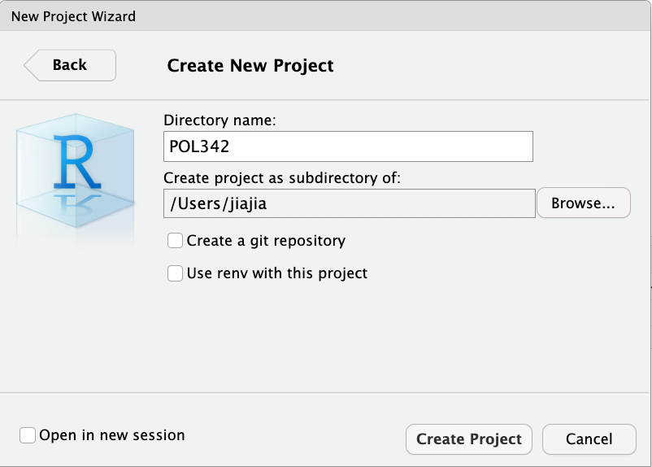
You should see a fresh view of RStudio with the project name on top.
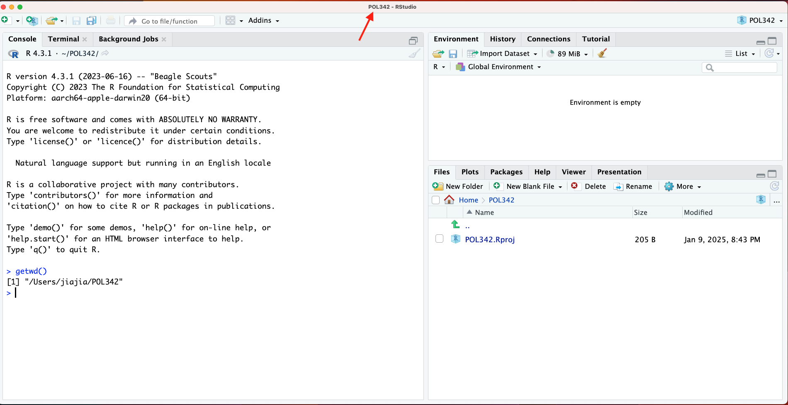
Exploring the data
Now, we are going to do what we tried to do something similar to what we did with Microsoft Excel last week.
## classtype reading math graduated
## 1 small 578 610 1
## 2 regular 612 612 1
## 3 regular 583 606 1
## 4 small 661 648 1
## 5 small 614 636 1
## 6 regular 610 603 0- Identify the number of observations and names of variables
## [1] 1274 4## [1] "classtype" "reading" "math" "graduated"- Object type
## [1] "character"- Listing unique values for a column
## [1] "small" "regular"- Calculating mean
## [1] 628.803## [1] 0.8697017- Finding mode
- NOT
mode()
##
## 0 1
## 166 1108##
## 0 1
## 166 1108- What if there are too many unique values?
##
## 527 529 533 535 536 538 542 543 545 549 552 554 555 557 559 560 562 564 565 567
## 1 3 1 1 1 1 1 1 2 3 5 4 1 6 6 2 3 5 4 4
## 569 570 572 573 575 577 578 580 582 583 585 587 588 590 592 593 595 597 599 600
## 4 6 5 8 4 7 14 7 15 10 13 15 15 17 16 21 24 13 12 15
## 602 604 606 608 610 612 614 616 618 620 622 624 626 629 631 633 636 639 641 644
## 27 20 27 27 19 20 28 31 15 21 29 27 20 50 28 39 36 27 44 29
## 647 650 654 657 661 665 670 675 680 686 693 702 713 728 753
## 36 49 40 34 36 37 33 31 25 26 24 17 14 9 3##
## 629 650 641 654 633 665 636 647 661 657 670 616 675 622 644 614 631 602 606 608
## 50 49 44 40 39 37 36 36 36 34 33 31 31 29 29 28 28 27 27 27
## 624 639 686 680 595 693 593 620 604 612 626 610 590 702 592 582 587 588 600 618
## 27 27 26 25 24 24 21 21 20 20 20 19 17 17 16 15 15 15 15 15
## 578 713 585 597 599 583 728 573 577 580 557 559 570 552 564 572 554 565 567 569
## 14 14 13 13 12 10 9 8 7 7 6 6 6 5 5 5 4 4 4 4
## 575 529 549 562 753 545 560 527 533 535 536 538 542 543 555
## 4 3 3 3 3 2 2 1 1 1 1 1 1 1 1## 629
## 50- Calculating median – two methods: median(), quantile()
median()
## [1] 629quantile()
## 50%
## 629## 25% 50% 75%
## 602 629 654- Standard deviation
## [1] 36.72968- Another conveniant way to get mean and median
## Min. 1st Qu. Median Mean 3rd Qu. Max.
## 527.0 602.0 629.0 628.8 654.0 753.0When you have questions about functions and don’t find the R documentations helpful, you can always turn to search engines. Most of the questions that will come up in your process of learning to use R are likely to be found on stackoverflow, so just search your question in Google or other search engines (and remember to indicate R in your searches, if not, you might get answers for other computing languages).
2.4 Some things to note for assignment 1
Object name
Object name assignment is important. If you name your data set dat, you should call upon the object dat whenever you want to use that object.
Removing objects using rm()
rm() is a function that accepts two types of arguments,
- the objects to be removed, as names (unquoted) or character strings (quoted)
- list – a character vector (or NULL) naming objects to be removed
Restarting R sessions and clearing workspace
When you are working on something new, you should always restart your R session and clear your workspace.
Start a new R session by going to Session > Restart R
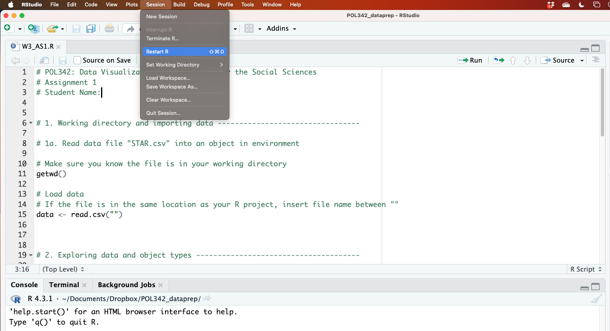
Note: Depending on your default setting, restarting R session may not clear your environment. If so, you can do it by clicking on Session > Clear Workspace…
2.5 Additional resources
- An Introduction to R for Research, chapter: Introduction
- Practise R on your own using Swirl: Learn R, in R
Comments
Rdoes not evaluate lines starting with#. This allow us to add glosses to our code